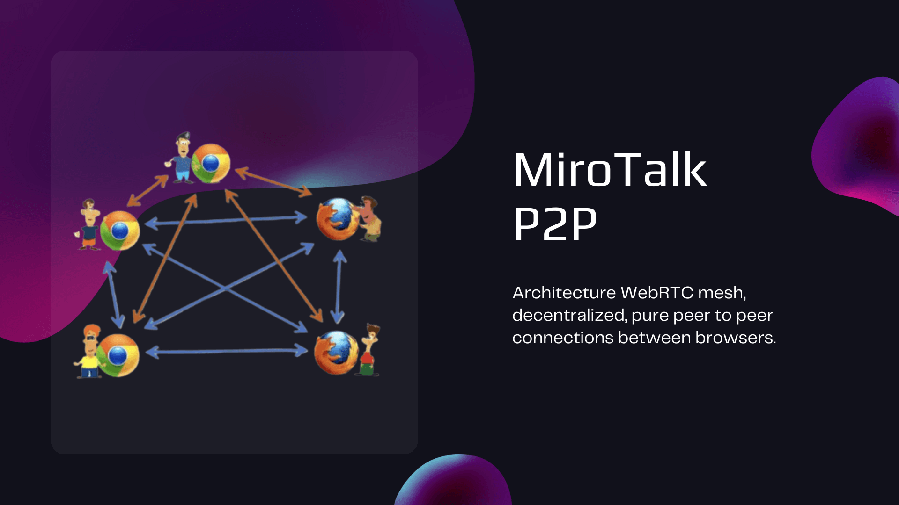
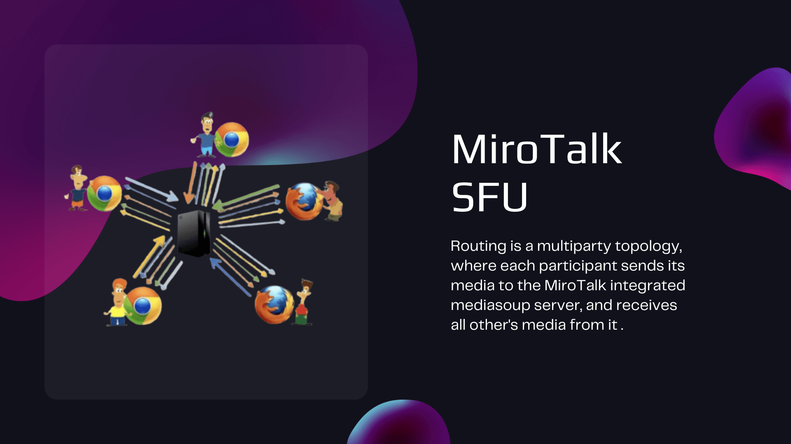

Call-Me
Click-to-callConnect a visitor with an available person through a direct, guest-friendly call flow.
Explore Call-MeMiroTalk covers private calls, group meetings, broadcasting, scheduling, and infrastructure operations. Choose only the architecture and workflow your team needs.
Each product has a clear role. The communication layer carries calls and broadcasts, WEB organizes meeting workflows, and ADMIN operates your deployed services.
Connect a visitor with an available person through a direct, guest-friendly call flow.
Explore Call-MeFocused camera-to-camera communication for two participants in a private room.
Explore C2CMesh meetings where participant devices exchange media directly whenever networks allow.
Explore P2PServer-forwarded meetings, classes, and webinars with richer moderation and media controls.
Explore SFUOne presenter reaches many viewers through P2P or SFU distribution modes.
Explore BROAdd accounts, scheduling, rooms, invitations, and launch flows around communication products.
Explore WEBConfigure, update, monitor, and manage MiroTalk services running on your servers.
Explore ADMINThe architecture changes bandwidth, device load, infrastructure needs, and scale. Neither model is universally better; each solves a different operating problem.

Participants exchange media directly when possible. This keeps routine media off the application server, while each additional peer adds work to participant devices and networks.

Each participant uploads to a media server, which forwards selected streams. Devices do less distribution work, while server CPU and bandwidth become part of the capacity model.
Start with the participant model, then account for infrastructure ownership and workflow. Detailed guides cover features, integration, security boundaries, and deployment.
Use the full product chooserCompare capabilities and integrations in the technical guide, or move directly into self-hosting.